import torch
import pandas as pd
from matplotlib import pyplot as plt
import matplotlib.ticker as mtick
import torch.nn as nn
from torch.nn import Conv2d, MaxPool2d, Parameter
from torch.nn.functional import relu
from torchvision import models
import torch.optim as optim
from torchsummary import summary
import torch.nn as nn
from torch.nn import ReLU
plt.style.use('seaborn-v0_8-whitegrid')13 Convolutional Neural Networks and Image Classification
Our first adventure with nontabular data.
Open the live notebook in Google Colab.
Our data for today is the Sign Language MNIST data set, which I retrieved from Kaggle. This data set poses a challenge: can we train a model to recognize a letter of American Sign Language from a hand gesture?
train_url = "https://raw.githubusercontent.com/PhilChodrow/ml-notes/main/data/sign-language-mnist/sign_mnist_train.csv"
test_url = "https://raw.githubusercontent.com/PhilChodrow/ml-notes/main/data/sign-language-mnist/sign_mnist_test.csv"
df_train = pd.read_csv(train_url)
df_val = pd.read_csv(test_url)Natively, this data set comes to us as a data frame in which each column represents a pixel. Each image has 28x28 pixels, so there are 784 pixel columns, plus one column for the label (the letter being signed). Let’s take a look at the data frame:
df_train.head()| label | pixel1 | pixel2 | pixel3 | pixel4 | pixel5 | pixel6 | pixel7 | pixel8 | pixel9 | ... | pixel775 | pixel776 | pixel777 | pixel778 | pixel779 | pixel780 | pixel781 | pixel782 | pixel783 | pixel784 | |
|---|---|---|---|---|---|---|---|---|---|---|---|---|---|---|---|---|---|---|---|---|---|
| 0 | 3 | 107 | 118 | 127 | 134 | 139 | 143 | 146 | 150 | 153 | ... | 207 | 207 | 207 | 207 | 206 | 206 | 206 | 204 | 203 | 202 |
| 1 | 6 | 155 | 157 | 156 | 156 | 156 | 157 | 156 | 158 | 158 | ... | 69 | 149 | 128 | 87 | 94 | 163 | 175 | 103 | 135 | 149 |
| 2 | 2 | 187 | 188 | 188 | 187 | 187 | 186 | 187 | 188 | 187 | ... | 202 | 201 | 200 | 199 | 198 | 199 | 198 | 195 | 194 | 195 |
| 3 | 2 | 211 | 211 | 212 | 212 | 211 | 210 | 211 | 210 | 210 | ... | 235 | 234 | 233 | 231 | 230 | 226 | 225 | 222 | 229 | 163 |
| 4 | 13 | 164 | 167 | 170 | 172 | 176 | 179 | 180 | 184 | 185 | ... | 92 | 105 | 105 | 108 | 133 | 163 | 157 | 163 | 164 | 179 |
5 rows × 785 columns
In principle, we’re already able to perform machine learning tasks on data in this format – treat each column as a feature and we’re ready to go. However, this format makes it very difficult to see relationships between these features. Importantly, a key feature of image data is that nearby pixels are often related to each other in important ways. There’s no hope to capture that idea from this data frame, because we can’t even tell which pixels are nearby each other. Let’s therefore reshape the data into something more like its native pixel format.
def prep_data(df):
n, p = df.shape[0], df.shape[1] - 1
y = torch.tensor(df["label"].values)
X = df.drop(["label"], axis = 1)
X = torch.tensor(X.values)
X = torch.reshape(X, (n, 1, 28, 28))
X = X / 255
return X, y
X_train, y_train = prep_data(df_train)
X_val, y_val = prep_data(df_val)print("Training data shapes:")
print(X_train.shape, y_train.shape)
print("Validation data shapes:")
print(X_val.shape, y_val.shape)Training data shapes:
torch.Size([27455, 1, 28, 28]) torch.Size([27455])
Validation data shapes:
torch.Size([7172, 1, 28, 28]) torch.Size([7172])We’ve shaped the data into a 4-dimensional tensor, with dimensions
The channel refers to the number of color channels in the image. Colors represented in Red, Green, and Blue color format (RGB) have 3 channels, one for each of R, G, and B. Greyscale images like the ones we’re working with today have only one channel.
\[ \begin{aligned} (\text{image index}, \text{channel}, \text{width}, \text{height})\;. \end{aligned} \]
So, to interpret X_train.shape, we have 27,455 images in the training data, each with 1 channel (grayscale), and each image is 28 pixels wide and 28 pixels high.
Code
ALPHABET = "ABCDEFGHIJKLMNOPQRSTUVWXYZ"
def show_images(X, y, rows, cols, channel = 0):
fig, axarr = plt.subplots(rows, cols, figsize = (2*cols, 2*rows))
for i, ax in enumerate(axarr.ravel()):
ax.imshow(X[i, channel].detach().cpu(), cmap = "Greys_r")
ax.set(title = f"{ALPHABET[y[i]]}")
ax.axis("off")
plt.tight_layout()
show_images(X_train, y_train, 5, 5)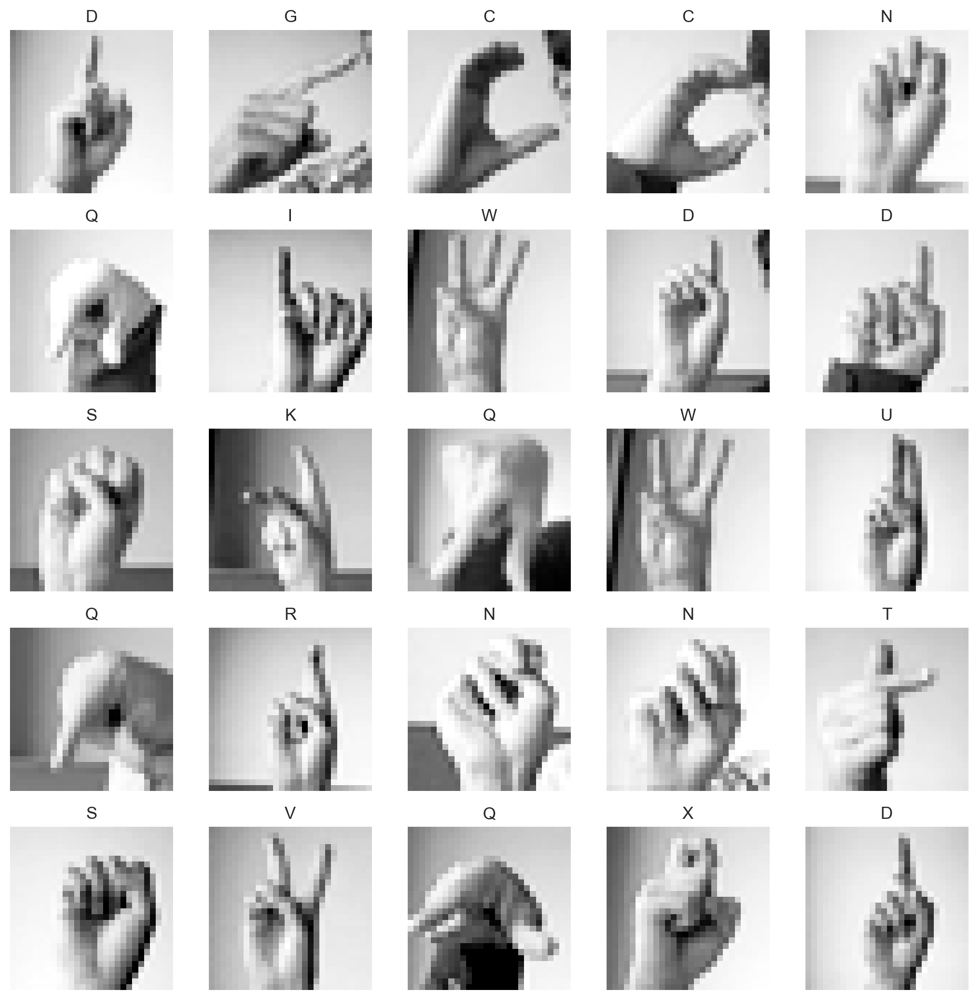
Let’s take a look at the distribution of characters in the training data:
Code
fig, ax = plt.subplots(1, 1, figsize = (6, 2))
letters, counts = torch.unique(y_train, return_counts = True)
proportions = counts / counts.sum()
proportions
ax.scatter(letters, proportions, edgecolor = "steelblue")
ax.set_xticks(range(26))
ax.set_xticklabels(list(ALPHABET))
ax.set(xlabel = "Letter", ylabel = "Frequency")
ax.yaxis.set_major_formatter(mtick.PercentFormatter(decimals = 1))
ax.set_ylim(0, 0.06)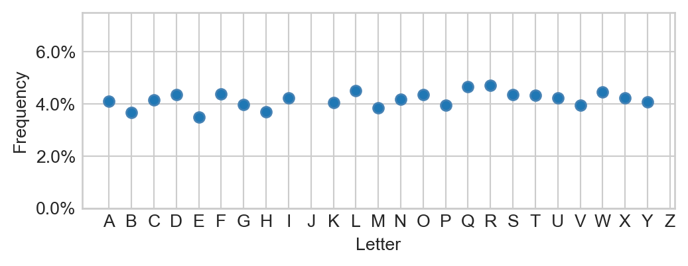
The most frequent letter (“R”) in this data comprises no more than 5% of the entire data set. So, as a minimal aim, we would like a model that gets the right character at least 5% of the time.
Data Prep
Data Loaders
As we saw when studying modern approaches to optimization loops, it’s convenient to loop through our data in batches and perform an optimization step after each batch. The following code defines a function that creates a data loader for our training and validation data sets.
def make_data_loader(X, y, batch_size = 32):
return torch.utils.data.DataLoader(
torch.utils.data.TensorDataset(X, y),
batch_size = 32,
shuffle = True
)
train_loader = make_data_loader(X_train, y_train)
val_loader = make_data_loader(X_val, y_val)As a reminder, it’s possible to loop through elements of the data loader using syntax like:
for X_batch, y_batch in train_loader:
# do something with X_batch
# and y_batchLogistic Regression Baseline
Let’s go ahead and train a logistic regression model on this data. This model will make no use of the spatial structure of the pixels. Relative to our previous logistic regression implementations, the main difference here is that we need to structure the model to accept input data whose single instance has dimensions (1, 28, 28) rather than (784,). We can achieve this by including a Flatten layer in our model, which will take the 1x28x28 pixel input and flatten it into a 784-dimensional vector before applying the linear transformation.
We can make our code a bit more concise by enclosing each of our layers inside an nn.Sequential container, which allows us to treat the entire sequence of layers as a single layer which we then call in the forward method.
Relative to previous implementations of logistic regression, you might notice that this implementation does not contain a call to the logistic sigmoid. The reason for this is that we are going to use
torch’s built-in nn.CrossEntropyLoss() as our loss function for training. For reasons of numerical stability, this function is structured to apply the cross-entropy loss, so we don’t need to do it in the model itself.- 1
-
The flatten layer transforms the
(1,28,28)image into a(784,)pixel sequence. - 2
- Apply a linear map (matrix multiplication)
- 3
-
Call the entire
pipelinewith a single call. - 4
-
Instantiate the model and move it to the
device.
Model Inspection
When constructing nontrivial deep learning models, it can be helpful to inspect them in order to get a sense for their structure and complexity level (especially the number of parameters). There are multiple ways to approach this, including several utilities which visualize the computational graph. Here, we’ll use the torchsummary package, which provides a nice summary of the model’s layers and parameters and includes a parameter count. To call the summary function, we need to specify the expected dimension of a single piece of data (including the channel):
For example, could you read off from the above model definition how many parameters are included in the model?
summary(model, input_size=(1, 28, 28)) Layer (type) Output Shape Param #
================================================================
Flatten-1 [-1, 784] 0
Linear-2 [-1, 26] 20,410
================================================================
Total params: 20,410
Trainable params: 20,410
Non-trainable params: 0
Input size (MB): 0.00
Forward/backward pass size (MB): 0.01
Params size (MB): 0.08
Estimated Total Size (MB): 0.09Even though we are looking at a simple logistic regression model, our parameter count is already in the tens of thousands!
The code block below allows us to evaluate a model’s performance by computing its accuracy and a confusion matrix on a specified data loader. There’s also a helper function for plotting the confusion matrix.
def evaluate(model, data_loader, multichannel = False):
ALPHABET = "ABCDEFGHIJKLMNOPQRSTUVWXYZ"
# confusion matrix
1 conf_mat = torch.zeros((26, 26), dtype = torch.int32)
loss_fn = nn.CrossEntropyLoss()
loss = 0
with torch.no_grad():
2 for X_batch, y_batch in data_loader:
3 scores = model(X_batch)
loss += loss_fn(scores, y_batch).item()
4 y_pred = torch.argmax(scores, dim = 1)
for i in range(len(y_batch)):
5 conf_mat[y_batch[i], y_pred[i]] += 1
6 acc = torch.diag(conf_mat).sum() / conf_mat.sum()
return acc, loss, conf_mat- 1
- Initialize a confusion matrix of zeros with dimensions 26x26 (one row and one column for each letter of the alphabet).
- 2
- For each batch in the data loader:
- 3
- Compute the model’s output scores for the batch.
- 4
- Determine the predicted class by taking the index of the maximum score for each instance in the batch.
- 5
- Update the confusion matrix by incrementing the count for the true label and predicted label for each instance in the batch.
- 6
- Compute the overall accuracy by summing the diagonal of the confusion matrix (correct predictions) and dividing by the total number of predictions.
Code
def plot_confusion_mat(conf_mat, ax, title = "Confusion Matrix"):
im = ax.imshow(conf_mat.cpu(), cmap = "Blues", origin = "upper")
# Show all ticks and label them with the respective list entries
ax.set_xticks(torch.arange(len(ALPHABET)))
ax.set_yticks(torch.arange(len(ALPHABET)))
ax.set_xticklabels(list(ALPHABET))
ax.set_yticklabels(list(ALPHABET))
ax.set_xlabel("Predicted Label")
ax.set_ylabel("True Label")
# Rotate the tick labels and set their alignment.
plt.setp(ax.get_xticklabels(), rotation=45, ha="right",
rotation_mode="anchor")
# Loop over data dimensions and create text annotations.
for i in range(conf_mat.shape[0]):
for j in range(conf_mat.shape[1]):
text = ax.text(j, i, conf_mat[i, j].item(),
ha="center", va="center", color="black", size = 6)
ax.set_title(title)
ax.grid(False)fig, ax = plt.subplots(figsize = (7, 7))
acc, loss, conf_mat = evaluate(model, val_loader)
plot_confusion_mat(conf_mat, ax, title = f"Confusion Matrix (acc = {acc:.2%})")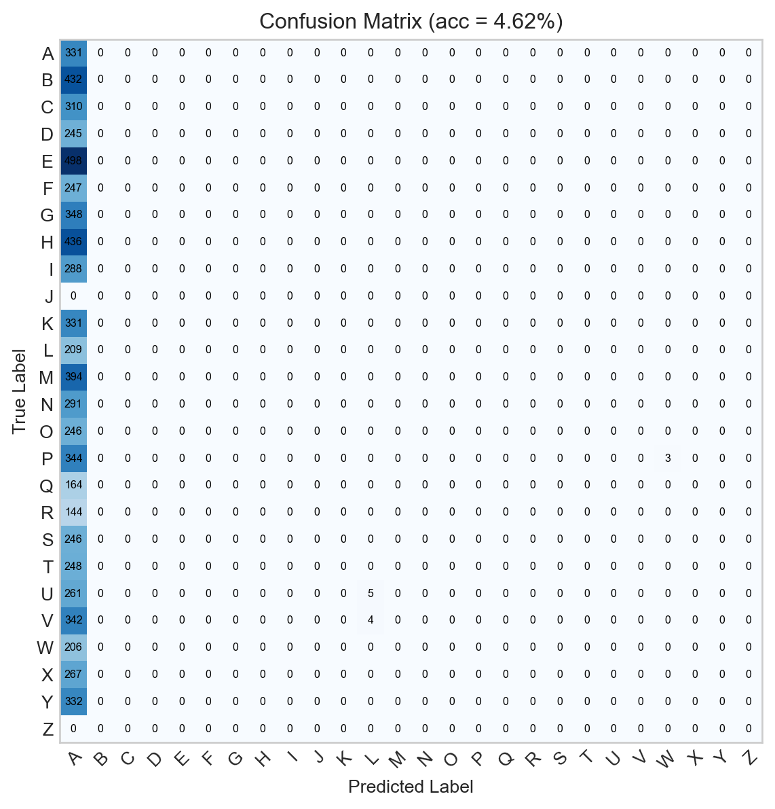
Obviously this model does not classify the data very impressively at all, since it hasn’t been trained yet. Let’s implement a training loop. This loop will perform model updates and track the model’s accuracy over time.
It would also be reasonable to track the average loss per batch over time. This would require an extra call to
model.forward on the validation set, which we’re not going to do here because it increases the training time substantially.def train(model, k_epochs = 1, print_every = 2000, **opt_kwargs):
# loss function is cross-entropy (multiclass logistic)
loss_fn = nn.CrossEntropyLoss()
# optimizer is SGD with momentum
optimizer = optim.SGD(model.parameters(), **opt_kwargs)
# initialize list of accuracies to
train_accuracy = []
val_accuracy = []
train_loss = []
val_loss = []
for epoch in range(k_epochs):
for i, data in enumerate(train_loader):
X, y = data
# clear any accumulated gradients
optimizer.zero_grad()
# compute the loss
y_pred = model(X)
loss = loss_fn(y_pred, y)
# compute gradients and carry out an optimization step
loss.backward()
optimizer.step()
train_acc, train_l, train_cm = evaluate(model, data_loader = train_loader)
val_acc, val_l, val_cm = evaluate(model, data_loader = val_loader)
train_accuracy += [train_acc]
val_accuracy += [val_acc]
train_loss += [train_l]
val_loss += [val_l]
return train_accuracy, train_loss, val_accuracy, val_lossNow let’s train the model and visualize its performance over time:
train_accuracy, train_loss, val_accuracy, val_loss = train(model, k_epochs = 30, lr = 0.001)Code
fig, axarr = plt.subplots(1, 2, figsize = (8, 3.5))
ax = axarr[0]
ax.plot(train_loss, color = "black", label = "Training")
ax.plot(val_loss, color = "firebrick", label = "Validation")
ax.set_title("Cross-Entropy Loss")
ax.set_xlabel("Epoch")
ax.set_ylabel("Loss")
ax = axarr[1]
ax.plot(train_accuracy, color = "black", label = "Training")
ax.plot(val_accuracy, color = "firebrick", label = "Validation")
ax.set_xlabel("Epoch")
ax.set_ylabel("Accuracy")
ax.set_title("Classification Accuracy")
ax.set(ylim = (0, 1))
plt.tight_layout()
l = ax.legend()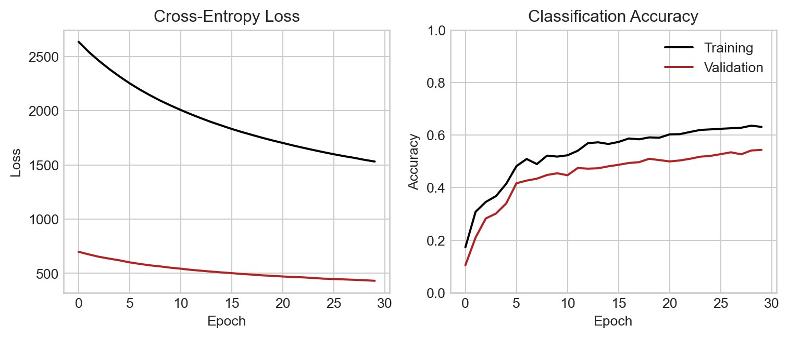
This model is not yet done training, and additional epochs might improve the performance. For the purposes of these notes we won’t push it further than that.
Already, the confusion matrix for the trained model looks much better:
Code
acc, loss, conf_mat = evaluate(model, val_loader)
fig, ax = plt.subplots(figsize = (7, 7))
plot_confusion_mat(conf_mat, ax, title = f"Confusion Matrix (acc = {acc:.2%})")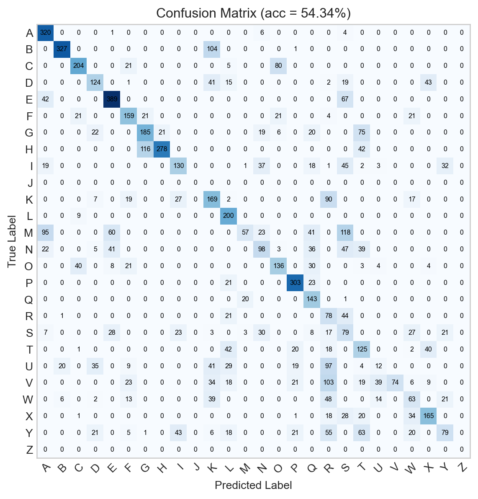
Although we can see that the model is often successful, 54% accuracy leaves a lot of room for improvement. Can we do better?
Convolutional Neural Networks
A common approach to feature extraction in images is to apply a convolutional kernel. A convolutional kernel is a component of a vectorization pipeline which is specifically suited to the structure of images. In particular, images are fundamentally spatial. We might want to construct data features which reflect not just the value of an individual pixel, but also the values of pixels nearby that one.
Convolutional kernels are not related in any way to positive-definite kernels used in kernel classifiers, another important ML topic.
The idea of an image convolution is pretty simple. We define a square kernel matrix containing some numbers, and we “slide it over” the input data. At each location, we multiply the data values by the kernel matrix values, and add them together. Here’s an illustrative diagram:
Kernel Convolutions

In this example, the value of 19 is computed as \(0\times 0 + 1\times 1 + 3\times 2 + 4\times 3 = 19\).
Manual Kernel Convolutions for Feature Extraction
For a long time, a common approach to image classification and related computer vision tasks was to hand-engineer a set of convolutional kernels designed to extract certain specific features of interest from the image. For example, here are some kernels designed to extract vertical, horizontal, and diagonal features from an image:
Code
vertical = torch.tensor([0, 0, 5, 0, 0]).repeat(5, 1) - 1.0
diag1 = torch.eye(5)*5 - 1
horizontal = torch.transpose(vertical, 1, 0)
diag2 = diag1.flip(1)
fig, ax = plt.subplots(1, 4)
for i, kernel in enumerate([vertical, horizontal, diag1, diag2]):
ax[i].imshow(kernel, vmin = -1.5, vmax = 2)
ax[i].axis("off")
ax[i].set(title = f'{["Vertical", "Horizontal", "Diagonal Down", "Diagonal Up"][i]}')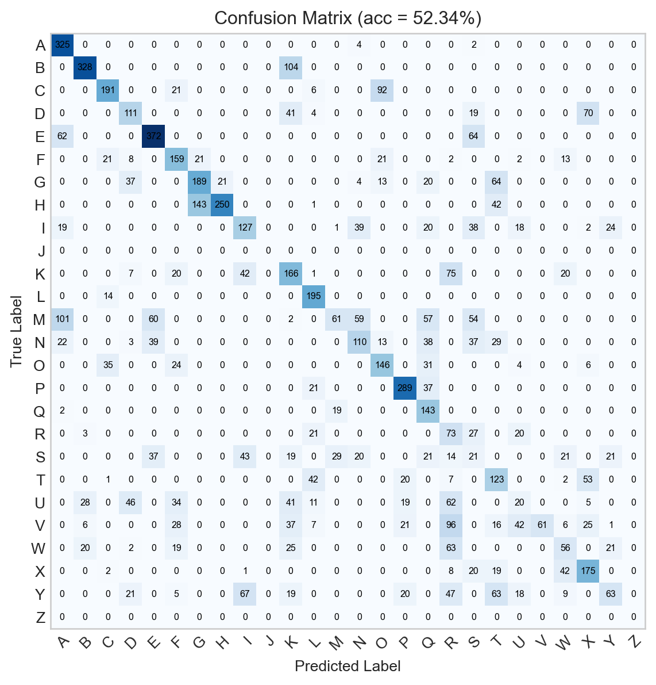
When we apply these convolutional kernels to an image, we obtain a new image in which the value of each pixel corresponds to the “alignment” of the image with the kernel at that point. Here are some examples:
Code
def apply_convolutions(X):
# this is actually a neural network layer -- we'll learn how to use these
# in that context soon
conv1 = Conv2d(1, 4, 5) # 1 input channel, 4 output channels, 5x5 kernels
# need to disable gradients for this layer
for p in conv1.parameters():
p.requires_grad = False
# replace kernels in layer with our custom ones
conv1.weight[0, 0] = Parameter(vertical)
conv1.weight[1, 0] = Parameter(horizontal)
conv1.weight[2, 0] = Parameter(diag1)
conv1.weight[3, 0] = Parameter(diag2)
# apply to input data and disable gradients
return conv1(X).detach()
def kernel_viz(pipeline):
fig, ax = plt.subplots(5, 5, figsize = (8, 8))
X_convd = pipeline(X_train)
for i in range(5):
for j in range(5):
if i == 0:
ax[i,j].imshow(X_train[j, 0])
else:
ax[i, j].imshow(X_convd[j,i-1])
ax[i,j].tick_params(
axis='both',
which='both',
bottom=False,
left=False,
right=False,
labelbottom=False,
labelleft=False)
ax[i,j].grid(False)
ax[i, 0].set(ylabel = ["Original", "Vertical", "Horizontal", "Diag Down", "Diag Up"][i])
kernel_viz(apply_convolutions)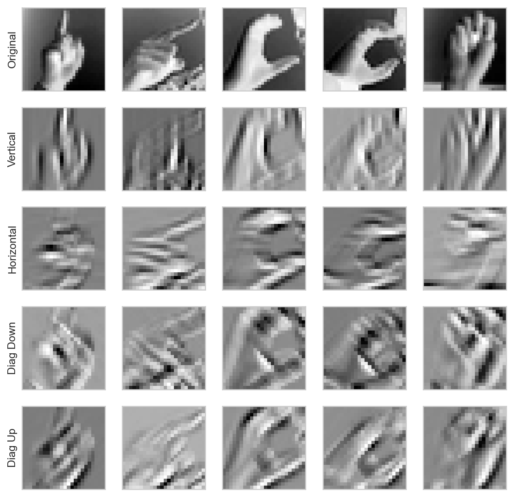
In principle, these convolutions could be used to define “scores” for each image: for example, summing up the “horizontal” values could give an image a score reflecting the prevalence of horizontal lines in the image.
A limitation of this approach is that we have to engineer all our kernels in advance. Wouldn’t it be simpler if we could simply initialize the kernels randomly and let the data tell us what the useful kernels might be?
Learnable Kernels
Fortunately, neural networks give us a framework for doing exactly that. The key insight is that the kernel convolution operation is, fundamentally, just a sequence of pairwise multiplications followed by an addition. This means that the convolution is a linear operation. This means:
Kernel Convolution is a Matrix Multiplication
Actually writing down the matrix multiplication formula for kernel convolution is complex and involves “doubly-index matrices,” so we won’t do that here. The key point is that, since the convolution operation is a matrix multiplication, we can treat it with the same framework as we have been using for other linear models – we just need to throw it in as a layer in a neural network.
A Minimal Convolutional Model
Just inserting a convolutional layer on its own won’t lead to substantial gains because, as we saw, composing linear layers doesn’t actually add that much. Instead, we can compose the convolutional layer with a nonlinearity (e.g. ReLU) and a final linear layer to get a minimal convolutional model. Since our output layer is a Linear layer, we still need to Flatten the output of the convolutional layer before feeding it into the linear layer.
- 1
- Specify that our images have only one input channel (greyscale), 4 output channels (we’ll try learning 4 kernels), and the kernels have shape 5x5 pixels.
- 2
- Apply nonlinearity.
- 3
- Flatten the output of the convolutional layer to feed into the linear layer.
- 4
- Apply the linear layer. The input dimension reflects the presence of 4 channels whose outputs have shape 24x24 pixels, and 26 output classes.
Let’s instantiate a model and take a look.
model = SmallConvNet().to(device)
summary(model, input_size=(1, 28, 28)) Layer (type) Output Shape Param #
================================================================
Conv2d-1 [-1, 4, 24, 24] 104
ReLU-2 [-1, 4, 24, 24] 0
Flatten-3 [-1, 2304] 0
Linear-4 [-1, 26] 59,930
================================================================
Total params: 60,034
Trainable params: 60,034
Non-trainable params: 0
Input size (MB): 0.00
Forward/backward pass size (MB): 0.05
Params size (MB): 0.23
Estimated Total Size (MB): 0.28How does this model perform?
k_epochs = 1
train_accuracy, train_loss, val_accuracy, val_loss = train(model, k_epochs = k_epochs, lr = 0.01, momentum = 0.9)Code
fig, axarr = plt.subplots(1, 2, figsize = (8, 3.5))
ax = axarr[0]
ax.plot(train_loss, color = "black", label = "Training")
ax.plot(val_loss, color = "firebrick", label = "Validation")
ax.set_title("Cross-Entropy Loss")
ax.set_xlabel("Epoch")
ax.set_ylabel("Loss")
ax = axarr[1]
ax.plot(train_accuracy, color = "black", label = "Training")
ax.plot(val_accuracy, color = "firebrick", label = "Validation")
ax.set_xlabel("Epoch")
ax.set_ylabel("Accuracy")
ax.set_title("Classification Accuracy")
ax.set(ylim = (0, None))
plt.tight_layout()
l = ax.legend()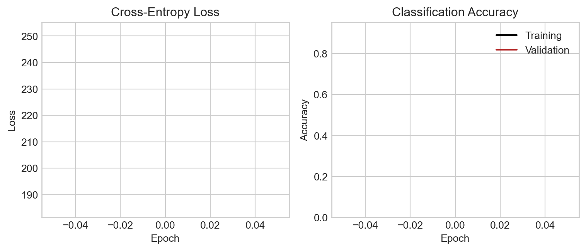
acc, loss, conf_mat = evaluate(model, val_loader)
fig, ax = plt.subplots(figsize = (7, 7))
plot_confusion_mat(conf_mat, ax, title = f"Confusion Matrix (acc = {acc:.2%})")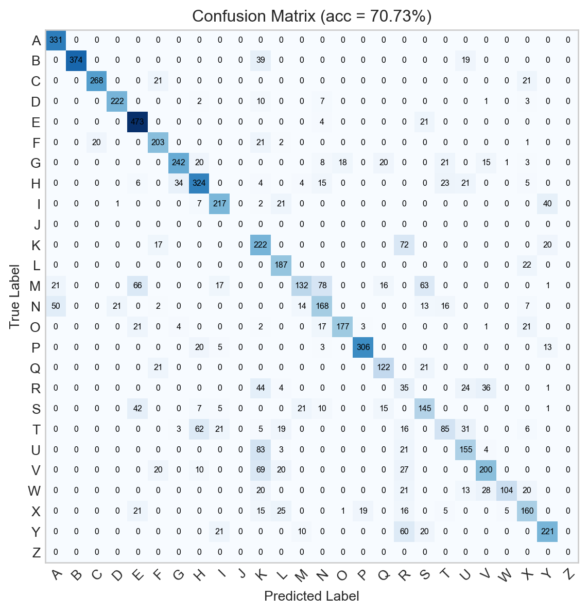
The minimal model is already able to somewhat exceed the performance of the logistic regression model, even after fewer epochs of training.
ISSUE IS AFTER HERE
More Complex Convolutional Models
A common approach to building more complex convolutional models is to stack multiple convolutional layers on top of each other, with nonlinearities in between. This allows the model to learn more complex features at different levels of abstraction. For example, the first convolutional layer might learn to detect edges, while the second convolutional layer might learn to detect combinations of edges that form shapes, and the third convolutional layer might learn to detect combinations of shapes that form objects.
Pooling
An issue with the stacking approach, however, is that the data remains very large throughout the pipeline, with each convolution reducing the data just by a few pixels in each dimension. This also prevents convolutional kernels at later layers from combining data from far away regions in the image. To address this, let’s reduce the data in a nonlinear way. We’ll do this with max pooling. You can think of it as a kind of “summarization” step in which we intentionally make the current output somewhat “blockier.” Technically, it involves sliding a window over the current batch of data and picking only the largest element within that window. Here’s an example of how this looks:

A useful effect of pooling is that it reduces the number of features in our data. In the image above, we reduce the number of features by a factor of \(2\times 2 = 4\).
Let’s now construct a complex model that layers convolutional layers, nonlinearities, and pooling layers.
There’s nothing special about the engineering of this model: I just stacked a few convolution and pooling layers together and then added a few more linear outputs.
class ConvNet(nn.Module):
def __init__(self):
super().__init__()
self.pipeline = torch.nn.Sequential(
nn.Conv2d(1, 100, 5),
nn.MaxPool2d(2, 2),
ReLU(),
nn.Conv2d(100, 50, 3),
nn.MaxPool2d(2, 2),
ReLU(),
nn.Conv2d(50, 50, 3),
nn.MaxPool2d(2, 2),
ReLU(),
nn.Flatten(),
nn.Linear(50, len(ALPHABET))
)
def forward(self, x):
return self.pipeline(x)This model has considerable additional complexity, indicated by its parameter count.
model = ConvNet().to(device)
summary(model, input_size=(1, 28, 28)) Layer (type) Output Shape Param #
================================================================
Conv2d-1 [-1, 100, 24, 24] 2,600
MaxPool2d-2 [-1, 100, 12, 12] 0
ReLU-3 [-1, 100, 12, 12] 0
Conv2d-4 [-1, 50, 10, 10] 45,050
MaxPool2d-5 [-1, 50, 5, 5] 0
ReLU-6 [-1, 50, 5, 5] 0
Conv2d-7 [-1, 50, 3, 3] 22,550
MaxPool2d-8 [-1, 50, 1, 1] 0
ReLU-9 [-1, 50, 1, 1] 0
Flatten-10 [-1, 50] 0
Linear-11 [-1, 26] 1,326
================================================================
Total params: 71,526
Trainable params: 71,526
Non-trainable params: 0
Input size (MB): 0.00
Forward/backward pass size (MB): 0.72
Params size (MB): 0.27
Estimated Total Size (MB): 1.00Let’s try training the model and seeing how we do.
BEFORE HERE
train_accuracy, train_loss, val_accuracy, val_loss = train(model, k_epochs = k_epochs, lr = 0.01, momentum = 0.9)fig, axarr = plt.subplots(1, 2, figsize = (8, 3.5))
ax = axarr[0]
ax.plot(train_loss, color = "black", label = "Training")
ax.plot(val_loss, color = "firebrick", label = "Validation")
ax.set_title("Cross-Entropy Loss")
ax.set_xlabel("Epoch")
ax.set_ylabel("Loss")
ax = axarr[1]
ax.plot(train_accuracy, color = "black", label = "Training")
ax.plot(val_accuracy, color = "firebrick", label = "Validation")
ax.set_xlabel("Epoch")
ax.set_ylabel("Accuracy")
ax.set_title("Classification Accuracy")
ax.set(ylim = (0, None))
plt.tight_layout()
l = ax.legend()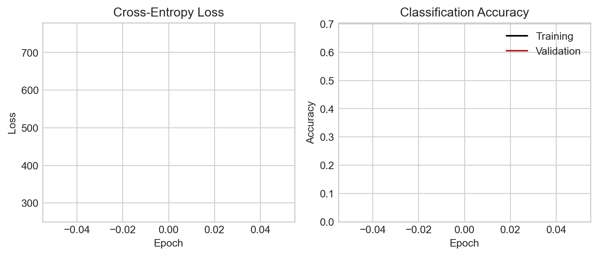
SPLIT
acc, loss, conf_mat = evaluate(model, val_loader)
fig, ax = plt.subplots(figsize = (7, 7))
plot_confusion_mat(conf_mat, ax, title = f"Confusion Matrix (acc = {acc:.2%})")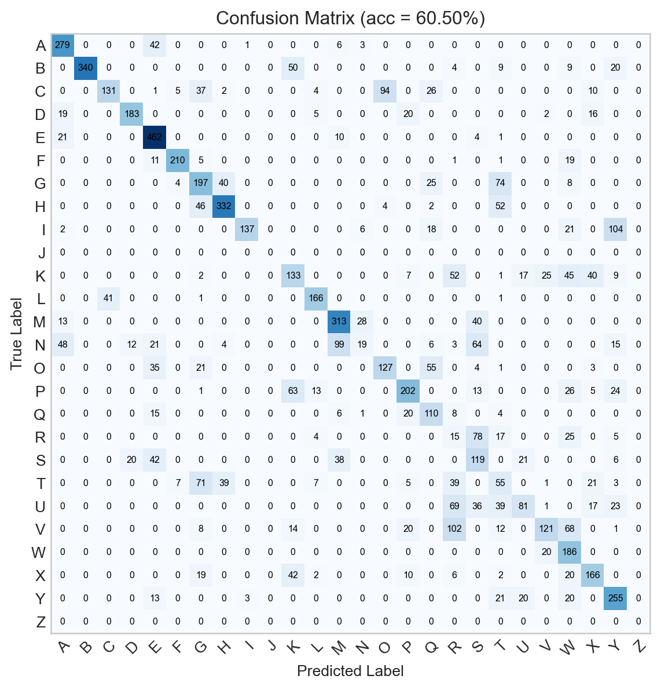
The additional complexity of this model enables it to achieve much higher accuracy than the previous models we’ve discussed, although more thorough training runs would be necessary for a full assessment.
Inspecting Learned Features
Like we saw last time, it’s possible to inspect the features learned by a neural network at different levels of abstraction. Let’s see some of the features learned by the model for a single image:
X_orig, y_orig = next(iter(train_loader))
fig, ax = plt.subplots(1, 1)
ax.imshow(X_orig[0,0].detach().cpu(), cmap = "Greys")
ax.axis("off")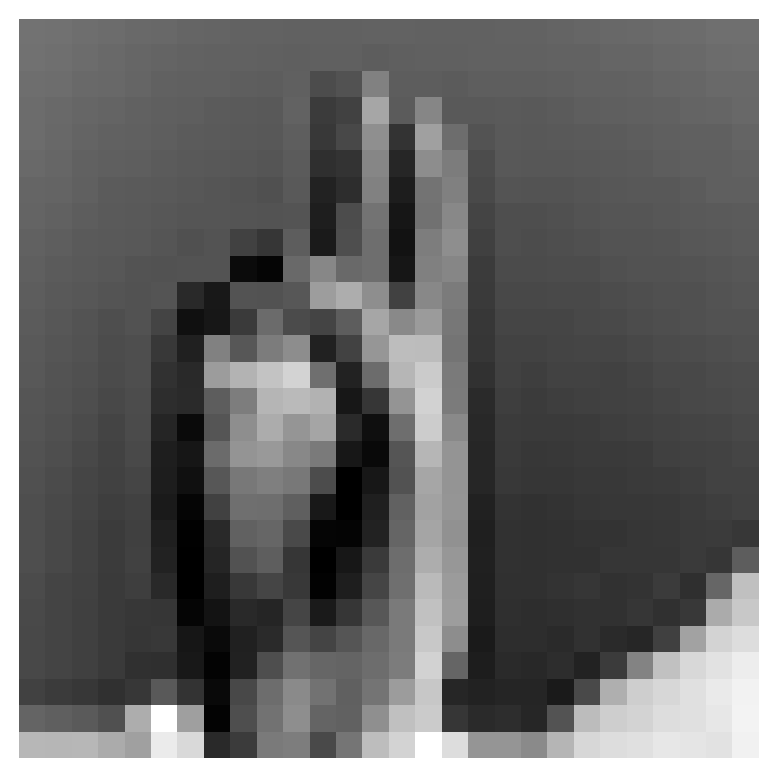
In the code block below, we show the outputs of different layers of the model when applied to this original image. Each layer’s output can be thought of as a different “representation” of the original image, with different features extracted at each layer.
def feature_at_layer(model, X_sample, layer_num):
for i, layer in enumerate(model.pipeline):
X_sample = layer(X_sample)
if i == layer_num:
break
return X_sample
fig, axarr = plt.subplots(3, 4, figsize = (10, 8))
for i in range(3):
for ix, j in enumerate([0, 1, 3, 4]):
X_sample = X_orig.clone()
X_sample = feature_at_layer(model, X_sample, j)
axarr[i, ix].imshow(X_sample[0][i].detach().cpu())
axarr[i, ix].axis("off")
layer_name = model.pipeline[j].__class__.__name__
axarr[0, ix].set_title(f"Layer {j}: {layer_name}")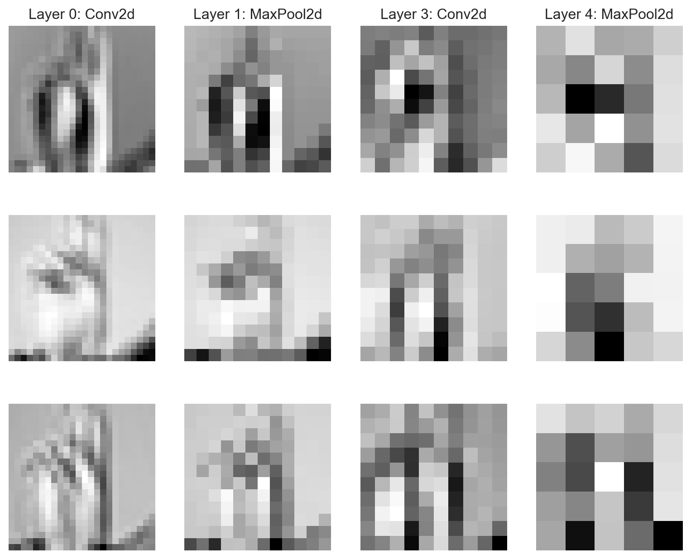
Interpreting these learned features can be tricky and is not generally recommended without context and many additional experiments.
Onward
In the next lecture, we’ll consider some additional practical considerations that arise when working with spatially-structured data and convolutional neural networks.
© Phil Chodrow, 2025